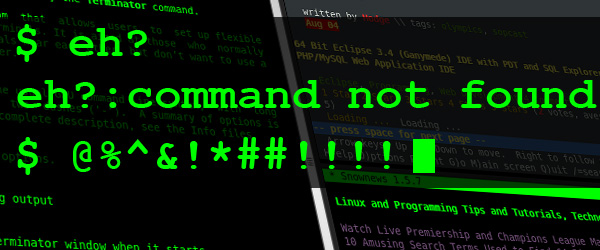

El rincón de jri838
Actualmente soy un alumno en la Universidad de Almería, cursando el tercer año de carrera. En este rincón voy a plasmar algunas impresiones de la carrera por si a alguien le interesara empezar esta aventura. Si te apasiona resolver problemas de cualquier tipo, y tienes curiosidad por si se puede automatizar alguna solución, puedes pensar en adentrarte en esta aventura, pero no será un camino facil.
El primer año de carrera, se enseña lo básico, pero no pienses que será meterte de lleno entre circuitos y cables. En el primer año, se trata de coger el hábito de la perseverancia. No se darán tantas facilidades como en el instituto, y el trabajo tendrá que ser constante, pero una vez uno se acostumbra al ritmo de trabajo, la situación se suavizará considerablemente.
El segundo año de carrera, ya te introduce más en el mundo, y se empezará a dar toques al trabajo en grupo y el uso de diferentes herramientas. Si te gusta el hardware, te verás divirtiéndote con tu compañero de trabajo con una Raspberry Pi ©, o configurando una serie de routers. Si lo tuyo es más el Software, podrás ver un enfoque diferente con los diagramas de clases o los diagramas de gant. Si te va más la programación, te divertirás programando un robot en un laberinto, descubriendo estructuras de datos y sus aplicaciones, o formas de organizar el código como el 'Modelo Vista Controlador'. También se profundizará en el conocimiento básico de un sistema operativo, o cómo se cuida la estructura de una base de datos.
Si llegas a el tercer año sin rendirte, es porque realmente te gusta la carrera. Ahora es cuando empieza lo divertido: Grupos de trabajo más grandes, y objetivos más abiertos que harán que explotes con tus compañeros de equipo, el ingenio y la imaginación. Ver como avanza cada proyecto, siempre que sigas un ritmo como se enseñó en los cursos anteriores, y que se van obteniendo resultados, te animará más y conseguirás más. En definitiva es como una bola de nieve que cae rodando y se hace más grande, si has llegado hasta aquí y te gusta, terminará apasionándote la carrera.
Queda decir un apunte, si no te ves capaz, o estás pasando por un bache o una mala racha y te ves obligado, en cierta forma, a decidir entre la carrera y otra cosa, dale prioridad a aquello que podrías perder. A veces es necesario dar dos pasos hacia atrás para poder tener una mejor perspectiva del camino que estás siguiendo y a dónde quieres llegar. Es lo mismo que decía mi maestro en Pintura (Francisco García Serrano): "Si no te ves capaz de dibujar el boceto tal como está, dale la vuelta al lienzo y dibújalo al revés", te garantizo que esto no solo funciona en pintura. También decía: "Todo son sombras, sombras y sombras, con algo de luces", también aplicable al mundo real, que indica que todo se ve afectado por todo, por lo que hay que tener en cuenta qué afecta a qué cosa, y cuidar que su sombra esté bien situada.